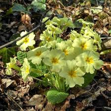
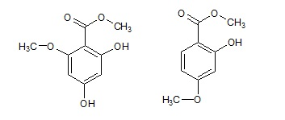

Lungo una strada montana dei miei posti è oggi tutto un fiorire di primule gialle; se fossero usignoli l'ambiente rimbomberebbe di inni alla primavera.
Il loro inno monocromatico lo mostrano lungo tutto il mese di marzo, riempiendo il tragitto di migliaia di occhietti gialli che rallegrano il percorso.

Si tratta della diffusissima Primula vulgaris che vive in tante parti delle nostre colline; durante l'anno si fa notare con difficoltà solo per qualche fogliolina verde rugosa, mentre esplode nel suo breve fulgore all'inizio della primavera.
Per quanto è carina da vedere, al contrario delle sua sorellina violetta è solo leggermente profumata.
Per stare in tema chimico, dopo essere passato da quelle parti ho dato un'occhiata al Parry (The chemistry of essential oils, 1921) per vedere i costituenti odorosi di questo delizioso fiorellino spontaneo.
Vi sono nella radice due glucosidi dai bellissimi nomi (Primaverina e Primulaverina!) che quando idrolizzati danno origine rispettivamente all'estere metilico dell'acido β-metoxiresorcilico e all'estere metilico dell'acido m-metoxisalicilico lievemente aromatici.
Ecco le rispettive formulette:

Esse nulla diranno ai non chimici ma le metto qui apposta provocatoriamente per dimostrare (per la milionesima volta...) che la natura E' FATTA di chimica, e che sta di casa anche e specialmente in quelle fragranti essenze che inebriano l'olfatto e in quell'arcobaleno di colori che rapiscono la vista.
-Niente chimica, mi raccomando!... -sento sempre dire da qualcuno- solo cose naturali!
E quei tremendi "-metoxi" ... eccetera che ho messo sopra, chi li ha fatti se non la natura?
Non facciamoci continuamente abbindolare, per favore, da quella stucchevole chimico-fobia social-mediatica oggi di gran moda!
2 commenti